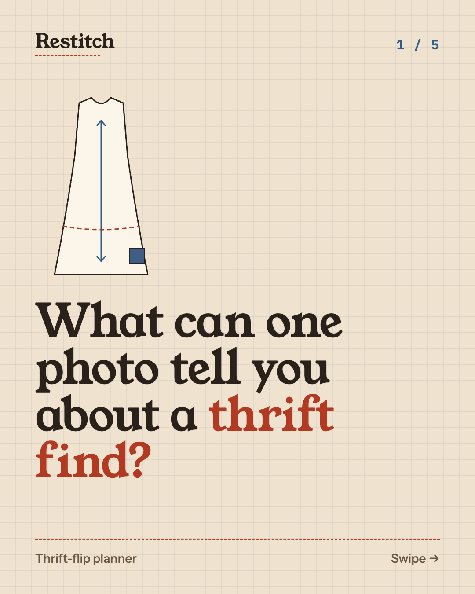
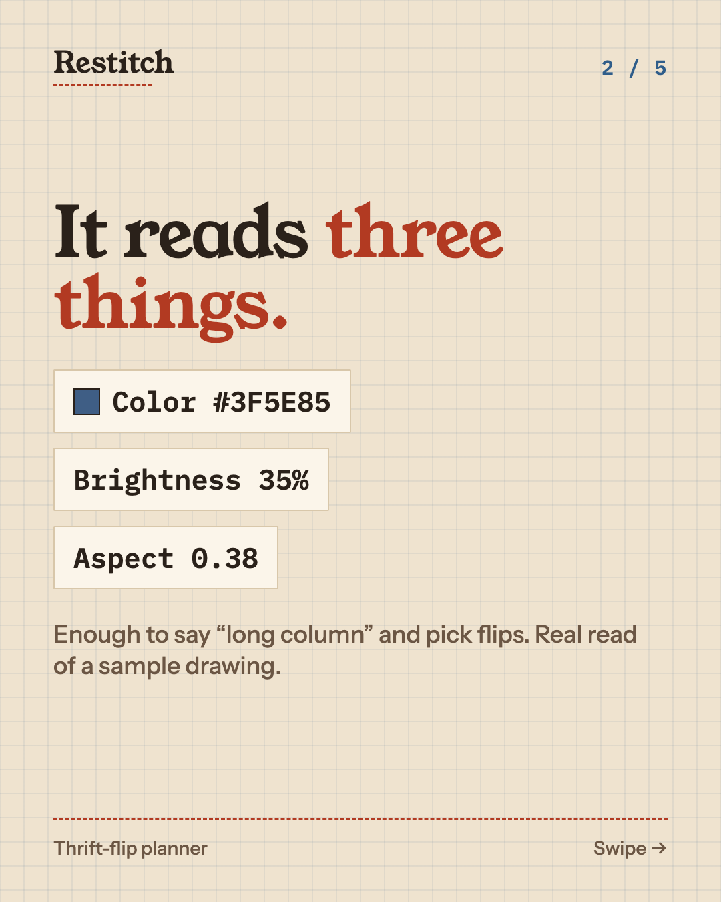
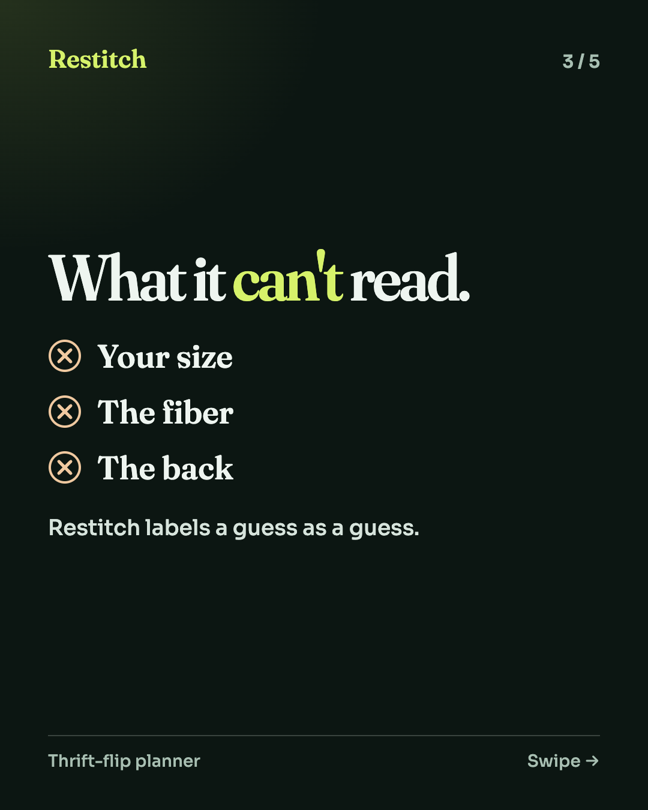
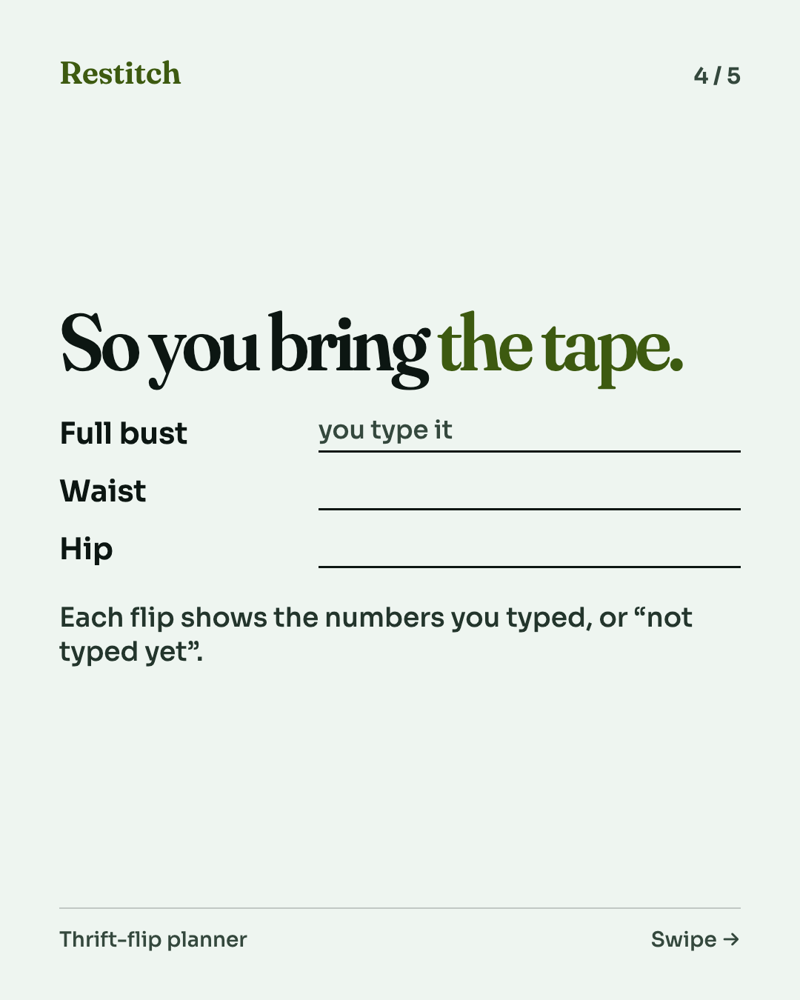

Social · organic posts
Photo. Skill. Tape.
One explainer in three sizes, and a five-slide carousel about what a photo can and can't tell you. Every number shown is the planner's real read of a sample drawing.
Explainer
How it works in three steps, with what you get and what it costs. Built as one HTML file, sized with ?size=.


Carousel · “What can one photo tell you?”
Five 4:5 slides. The honesty is the hook: it reads three things, and says which three it can't.









Caption: A photo of a thrift find tells you its color, how bright it is and its shape. It can't tell you your size, the fiber or what the back looks like. Restitch uses the first three to suggest a no-sew, a hand and a machine flip, and leaves the tape to you. Free, no account. Link in bio.
Tags: #thriftflip #upcycling #refashion #sewingforbeginners #nosew
Tags: #thriftflip #upcycling #refashion #sewingforbeginners #nosew
5-second test
Show the square explainer to five people for five seconds, then ask: What does it do? Who is it for? What does it cost? Pass = 4 of 5 answer two of three right.